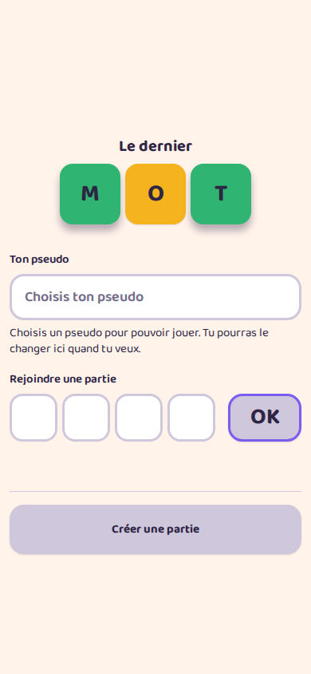
01
Accueil
la porte d'entrée, sans rien de saisi
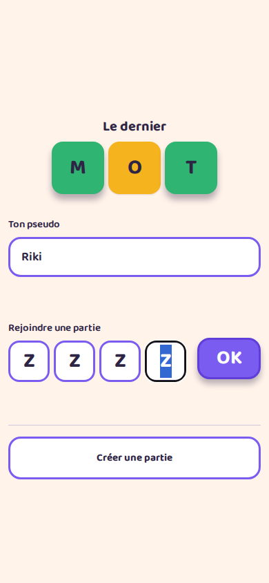
02
Accueil
un pseudo et un code saisis
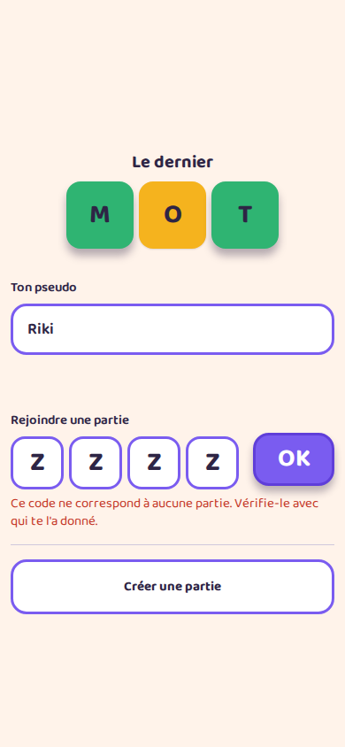
03
Accueil
le refus d'un code qui n'existe pas
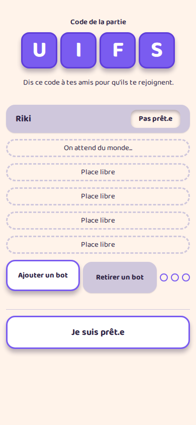
04
Salon
le code à dicter, et personne encore
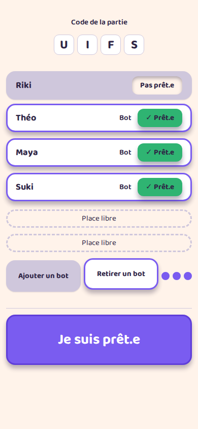
05
Salon
quatre joueurs, trois bots, places restantes
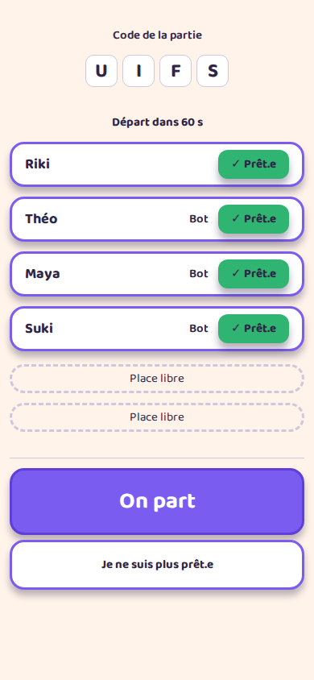
06
Salon
tout le monde est prêt: la question du départ
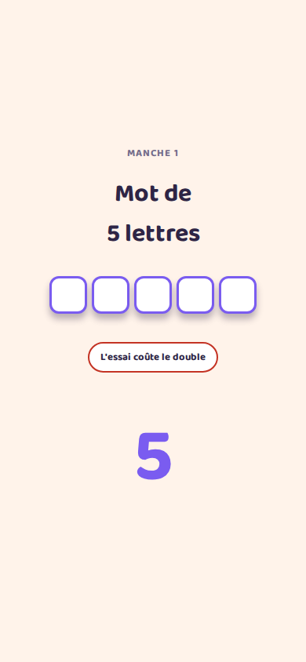
07
Annonce
les règles du tour, avant que la manche parte
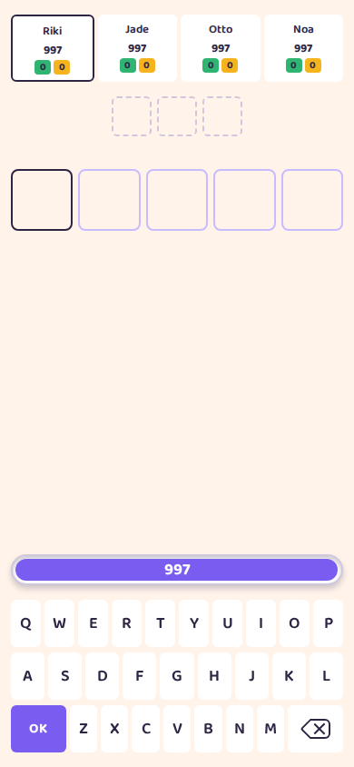
08
Manche
la grille vide, la jauge pleine
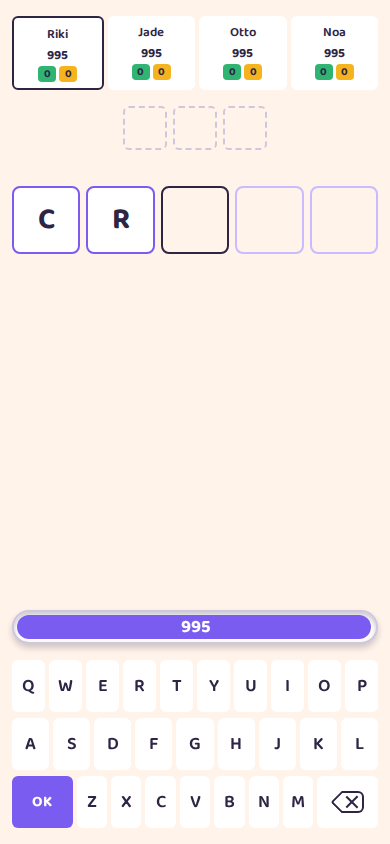
09
Manche
deux lettres posées, la case active devant
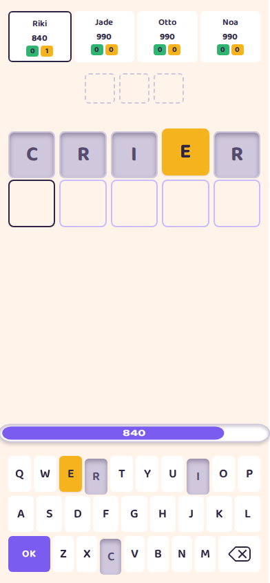
10
Manche
un essai jugé, le clavier qui en garde la trace
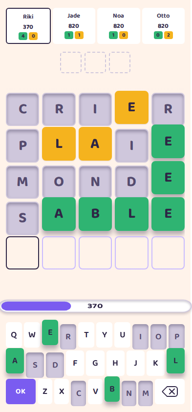
11
Manche
quatre essais, l'avance qui se construit
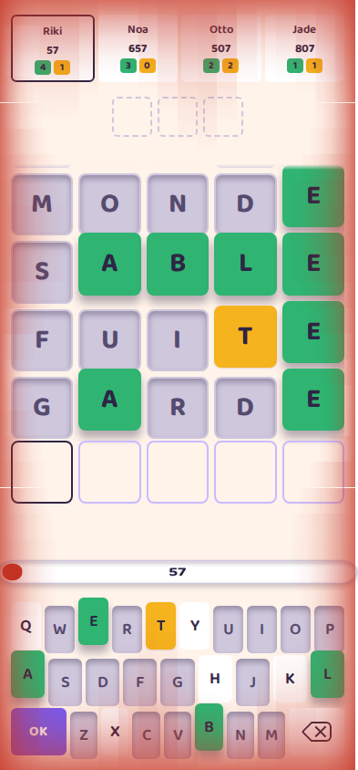
12
Manche
la grille qui déborde et doit défiler
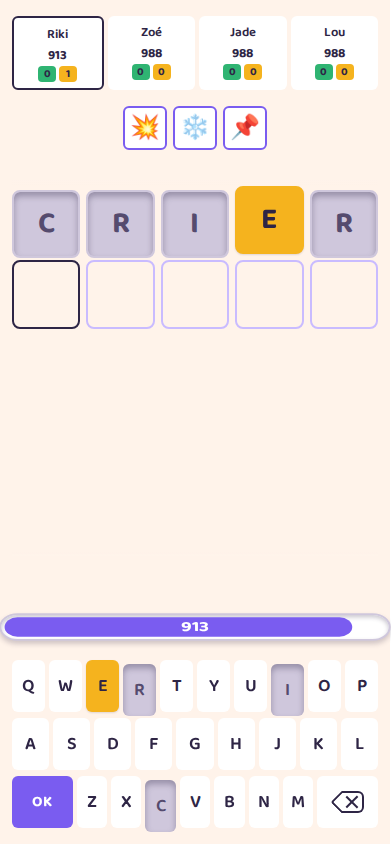
13
Manche
trois emplacements occupés, prêts à partir
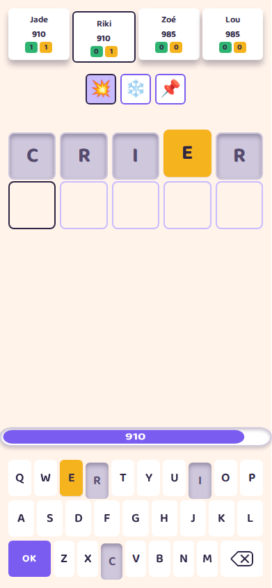
14
Manche
un malus choisi: les cibles s'offrent dans le bandeau
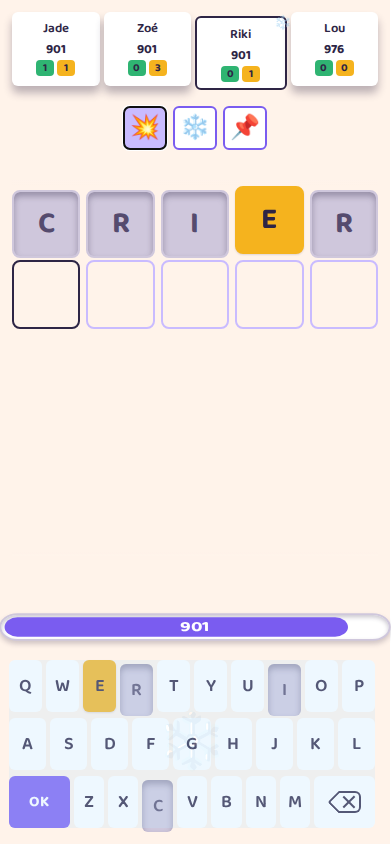
15
Manche
le clavier gelé: plus une touche ne répond
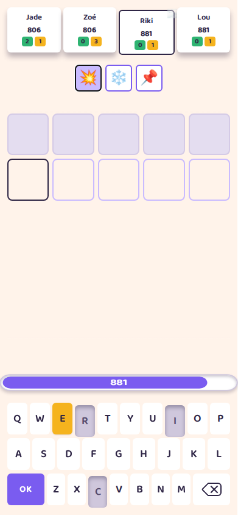
16
Manche
les essais passés voilés
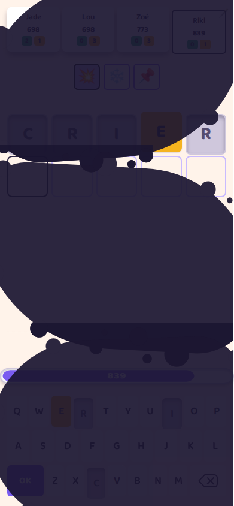
17
Manche
les taches d'encre posées sur la grille
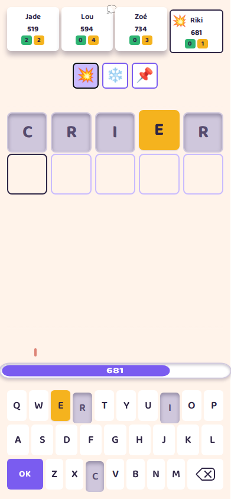
18
Manche
un coup encaissé: la jauge qui saute
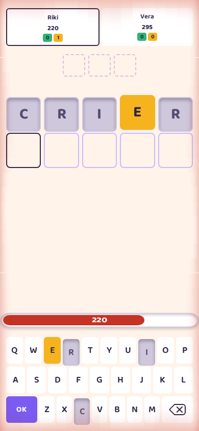
19
Manche
sous le seuil: ce que l'écran fait pour le dire
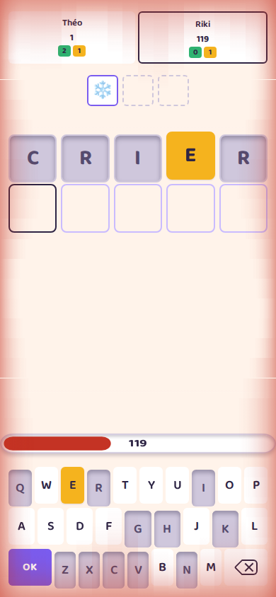
20
Manche
l'aide tombée sans un mot: des lettres que le joueur n'a jamais jouées
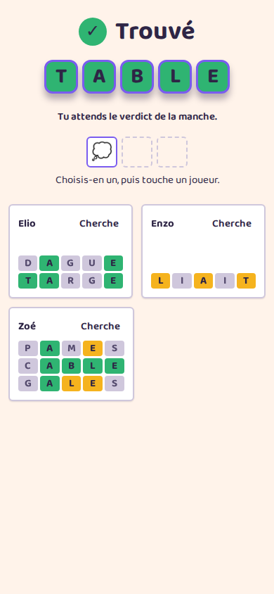
21
Dénouement
le mot trouvé, le score, et la place
 22
Spectateur
la table entière pendant que les autres cherchent
22
Spectateur
la table entière pendant que les autres cherchent
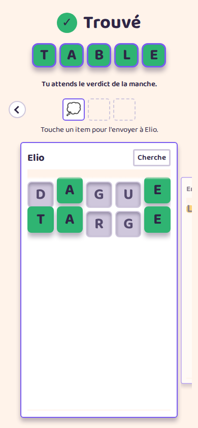
23
Spectateur
une grille en grand, les voisins qui dépassent
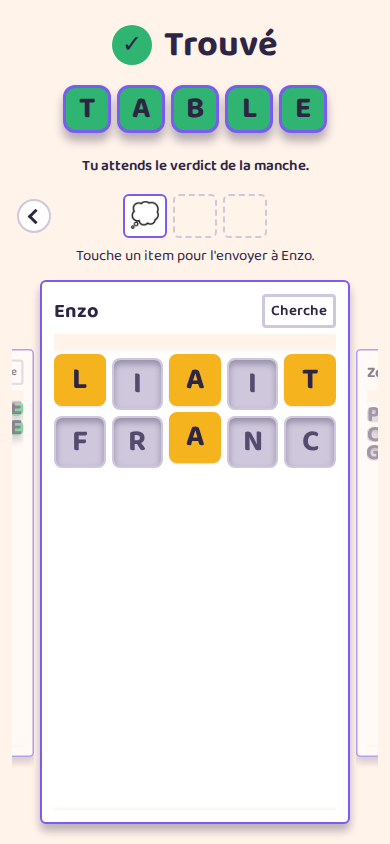
24
Spectateur
le joueur suivant, amené au centre
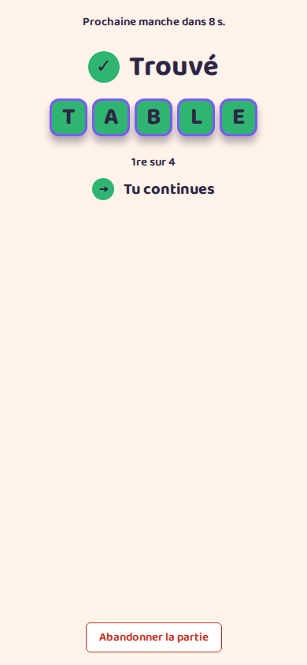
25
Spectateur
la manche finie: le verdict, et quand repart la suivante
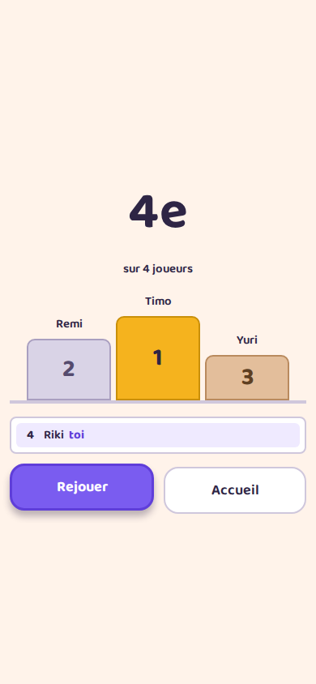
26
Dénouement
la jauge à zéro: le dénouement, ou la fin de partie quand toute la table tombe
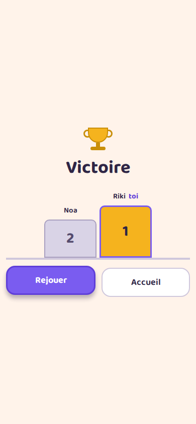
27
Fin de partie
le dernier survivant, le mot, et la suite